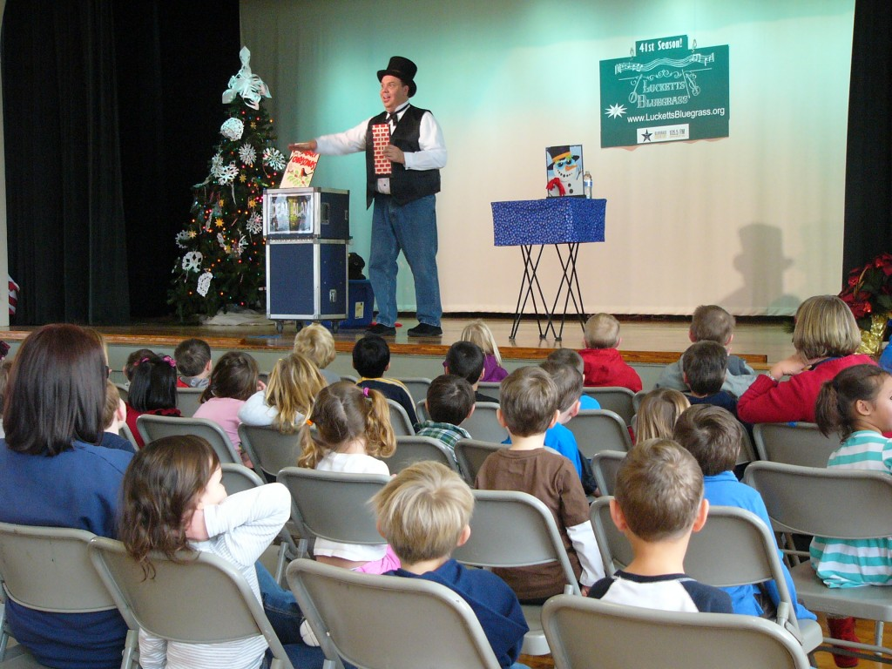

Christmas Magic Show
Christmas Magic Show!
Christmas Magic! Everyone loves this time of year and it’s the perfect time for a Christmas  Magic Show. Dean Alan will be doing his Very Merry Magic Show all over the D.C. Metro Area! New with the show this year “making a Christmas Tree Magically Appear!” Along with the magic, Dean will be incorporating famous Holiday stories like Twas The Night Before Christmas, Snowmen at Night, How The Grinch Stole Christmas and others. And there will be plenty of festive magic for all to enjoy as well. Magic with Snowmen, Santa, Christmas Trees and more.
Magic Show. Dean Alan will be doing his Very Merry Magic Show all over the D.C. Metro Area! New with the show this year “making a Christmas Tree Magically Appear!” Along with the magic, Dean will be incorporating famous Holiday stories like Twas The Night Before Christmas, Snowmen at Night, How The Grinch Stole Christmas and others. And there will be plenty of festive magic for all to enjoy as well. Magic with Snowmen, Santa, Christmas Trees and more.
One of the favorite routines each year involves a Giant Christmas Card with a Picture of Santa inside that is missing colors. Through Magic the image is colored in, but the first time a mistake happens and Santa’s costume turns out Green. It seems like a mistake, but it’s not. You see, Father Christmas, who is the European version of Santa, wears these colors. So the picture must be changed to the more familiar version and sure enough it happens, with a lot of other magic and silliness taking place along the way! 

This show makes a wonderful addition to a Kid’s Holiday Concert, or Breakfast with Santa, Family Christmas Party, or other Seasonal event. Many clients make THIS SHOW an annual program at their businesses, community centers, and schools.
If you’d like to set up this show at your location, just call or email us, or use the Book a Show page! Dates will fill up soon, so contact us soon!
Dean Alan 703-404-8902 e-mail info@DeanAlanMagic.com
By the way, if you’re interested, follow this link to my blog to read a story about when I was Santa!